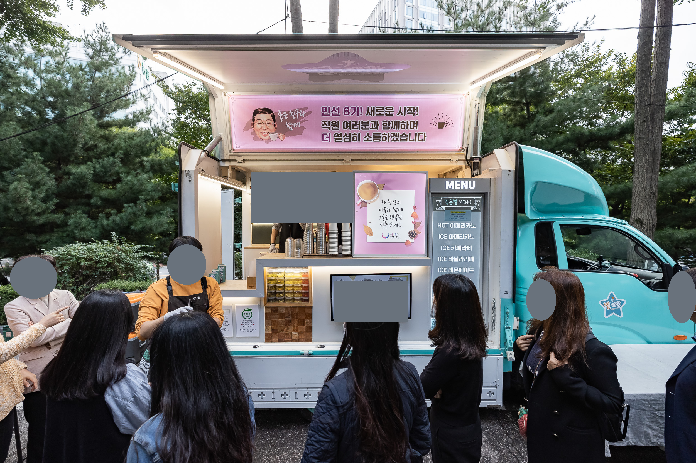

2022 · 캐리커처 · 현수막 활용
구청 직원을 위한 커피트럭 캐리커처
구청 직원 대상 커피트럭 행사에 사용할 캐리커처를 그렸습니다.
직접 제작한 캐리커처와 포트폴리오에 정리한 적용안입니다. 차량 목업과 실제 행사 사진을 나눠 볼 수 있습니다.
캐리커처와 적용 목업
위: 커피를 든 캐리커처 / 가운데: 현수막 적용안 / 아래: 차량 적용 목업. 본인 작업인 캐리커처와 현수막 적용 구성을 소개합니다.

실제 행사 적용 사진
사진: 광진구청 · 2022.10.05 행사 기록. 얼굴을 가린 공개용 사본이며 현수막 그림과 문구는 원본 그대로입니다.
